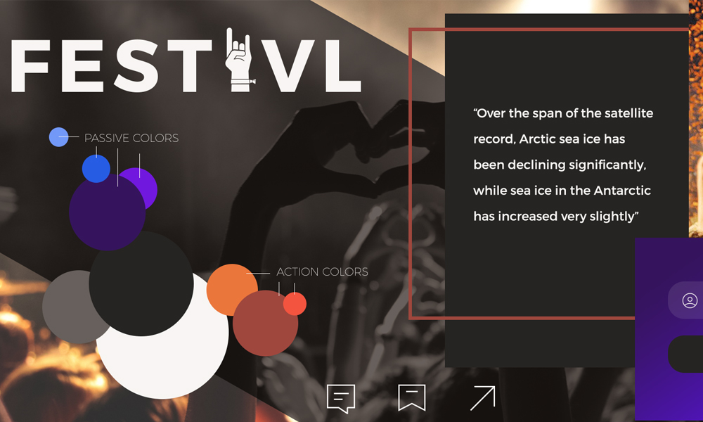
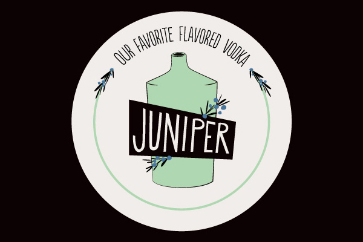
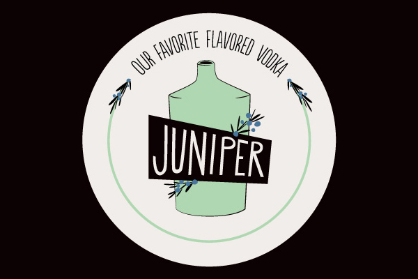
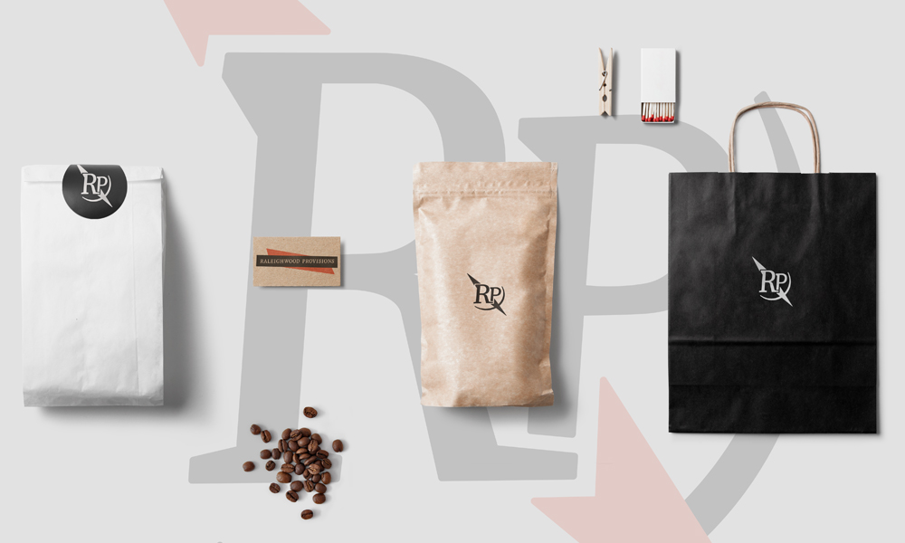
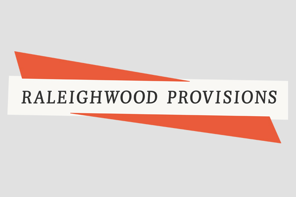
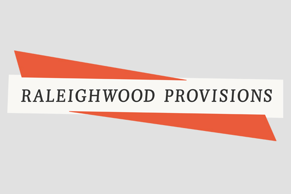
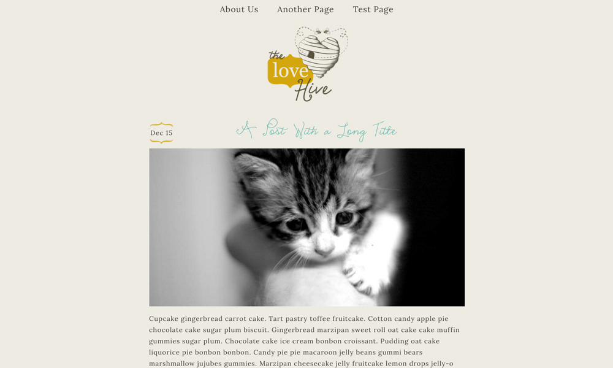

Festivl Web App
Festivl is a web app built to rate acts at music festivals, share your ratings with Facebook friends, and create a festival schedule for you based on your input. I designed a UI for this app as well as creating the brand. I also integrated the UI into the front end of the Angular app in a modular and scalable way. It debuted in beta Summer 2016.


Most of this site is simple and modular, and we later realized it was important to use color to represent a rating’s value. Around 20 users tested the site this summer during Hopscotch Music Festival in Raleigh and we got a lot of great feedback for design, user experience, and functionality.
Go to the site PrototypeBittersweet

Bittersweet is a local bar that needed branding and a web presence. I worked with the owner to create a fun, unique brand and a website to showcase not only their awesome fare, but to be informational at first glance. After launching an initial site to gain investor attention, we redesigned based on user feedback, placing importance on business information, events and imagery.

 

Branding this bar was great because we wanted to go in an unique direction-- not too trendy, more mid-century and a little bit homemade at the same time.
Go to the siteRaleighwood Provisions
Raleighwood Provisions is a new shop opening in Raleigh next year. Basically, it’s a fancy bodega with local food, beverages and dry goods. I wanted to evoke a printed quality and gathered a lot of inspiration from gas station and bodega logos from the 60s and 70s.


 

The Love Hive
The Love Hive is a lifestyle blog run by a mom in Boston. We recently redesigned to update the look and feel to a very minimalist layout. The logo was a lot of fun to draw. The hive is a place where the bee colony supports one another, so playing on that with the traditional heart shape with some homegrown character connected the family-oriented posts with the branding.